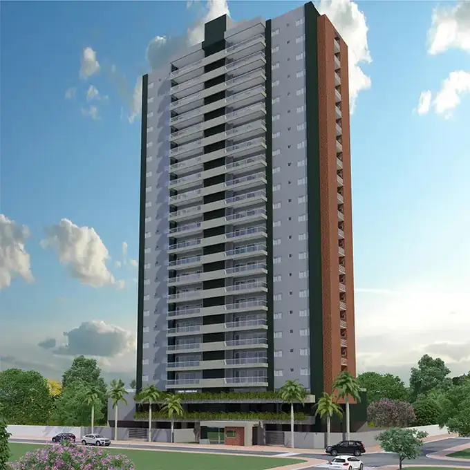
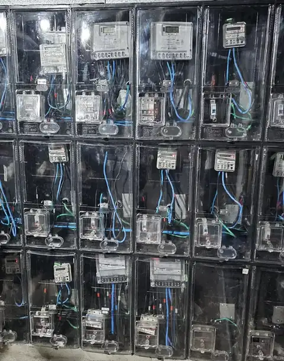
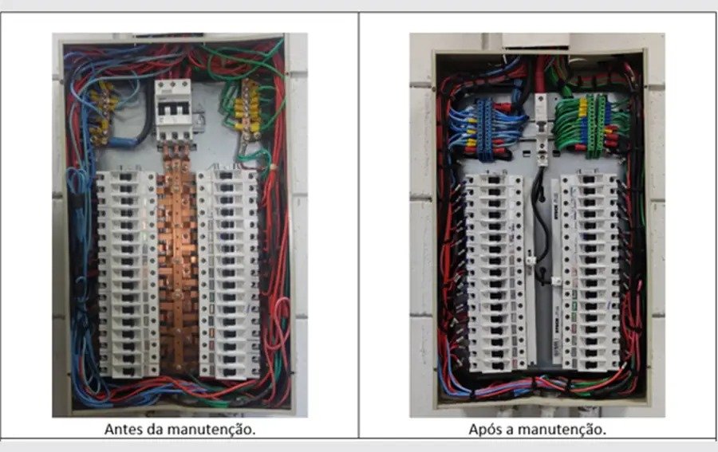
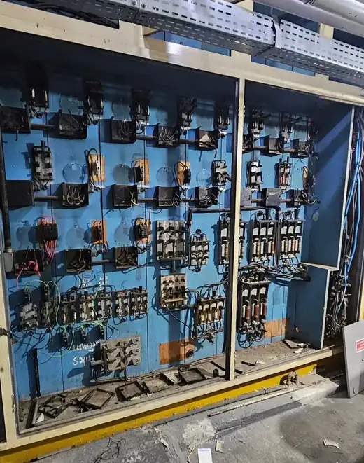
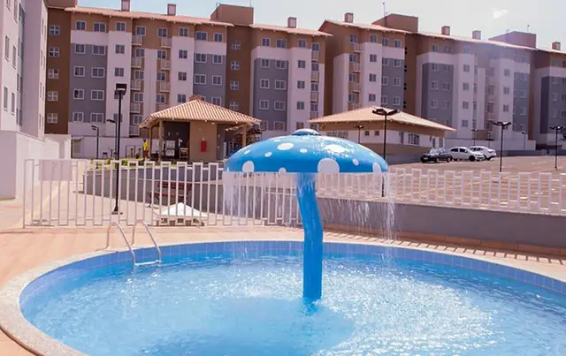
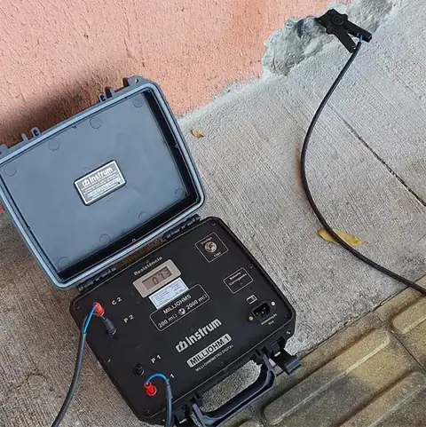

Inspeção predial elétrica para construtoras e condomínios.
Laudo de entrega e de recebimento de obra, inspeção periódica e perícia das instalações elétricas de edifícios residenciais e comerciais. Avaliação com base nas normas técnicas, ART emitida e engenheiro eletricista responsável.

Construtoras, condomínios e instituições que atendemos


Um laudo para cada momento do edifício
Da entrega das chaves à operação do prédio, a instalação elétrica precisa de quem documente o estado real dela. Só a parte elétrica, com profundidade de quem projeta e executa.
Laudo de entrega da obra
O sistema elétrico verificado antes das chaves, enquanto a equipe ainda está no canteiro e corrigir custa menos. Menos chamado de assistência técnica no pós-obra e documentação técnica para responder à garantia.
Laudo de recebimento das áreas comuns
A comissão de recebimento assina o termo sabendo exatamente o que está recebendo. O laudo aponta as pendências elétricas e o que é responsabilidade de quem, antes da assinatura.
Inspeção periódica e termografia
Para condomínios, edifícios comerciais e administradoras: inspeção dos quadros, medição e aterramento, termografia e prontuário das instalações elétricas conforme a NR-10.
Perícia e parecer técnico
Parecer sobre vícios construtivos e falhas no sistema elétrico para discussões de garantia, sinistro ou processo judicial, assinado por engenheiro eletricista com ART.
O que inspecionamos no prédio
Da entrada de energia ao último quadro de distribuição. Cada item vira registro fotográfico, norma de referência e recomendação no laudo.

- Entrada de energia e subestaçãoCabine, transformador, proteção geral e condições de acesso e operação.
- Centro de mediçãoMedidores, barramentos, identificação das unidades e saída dos ramais.
- Quadros gerais e de distribuiçãoConexões, barramentos, identificação de circuitos e grau de proteção.
- Prumadas e alimentadoresDimensionamento, fixação e estado dos condutores até cada unidade.
- Dispositivos de proteçãoDisjuntores, DR e DPS: presença, dimensionamento e funcionamento.
- Aterramento e equipotencializaçãoMedição da resistência e continuidade das ligações.
- SPDA (para-raios)Captação, descidas, conexões e ensaio de continuidade.
- Áreas comunsIluminação, tomadas e alimentação de bombas, elevadores e portões.
- Gerador e transferênciaQuadro de transferência e cargas de emergência, quando houver.
- TermografiaPontos de aquecimento anormal em conexões e componentes sob carga.
Laudo com base normativa, não com opinião
Toda não conformidade apontada no laudo vem acompanhada da norma que ela descumpre. É isso que transforma uma vistoria em documento técnico.
Inspeção predial: diretrizes, conceitos e procedimento, aplicados ao sistema elétrico do edifício.
Instalações elétricas de baixa tensão: quadros, circuitos, proteções, aterramento.
Instalações elétricas de média tensão: subestação e entrada de energia.
Proteção contra descargas atmosféricas: SPDA, aterramento e equipotencialização.
Garantias da edificação: prazos de referência para os sistemas elétricos.
Segurança em instalações e serviços em eletricidade, incluindo o prontuário.
Um laudo independente protege os dois lados da entrega
Na entrega de um edifício, construtora e condomínio olham para a mesma instalação elétrica com interesses diferentes. Sem um laudo técnico, a discussão sobre o que é vício construtivo e o que é falta de manutenção vira opinião contra opinião.
Para a construtora, a inspeção antes da entrega encontra as pendências enquanto ainda é barato corrigir, e gera a documentação que sustenta as respostas aos chamados de garantia. Para o condomínio, o laudo mostra o que está sendo recebido antes de assinar o termo.
A AM2 é uma empresa de engenharia elétrica. Já projetamos subestação, SPDA e instalações de torres residenciais, e executamos modernização de edifícios em operação. Sabemos onde o problema costuma estar porque sabemos como o prédio é construído.
Avaliação independente
O laudo descreve o que a instalação é, não o que alguém gostaria que ela fosse.
ART em todo laudo
Engenheiro eletricista registrado no CREA responde tecnicamente pelo que está escrito.
Ensaio e medição, não só olho
Termografia, medição de aterramento, ensaio de continuidade e teste dos dispositivos de proteção.
Pendências classificadas
Cada não conformidade com foto, norma, grau de criticidade e recomendação de correção.
Edifícios e instalações em que já atuamos
Inspeção, ensaio, projeto e execução elétrica em prédios residenciais, comerciais e institucionais.

Novo Mundo
Instalação de média e baixa tensão de 1.000 kVA

Edifício Goiandira
Subestação de 225 kVA, centro de medição de 40 unidades, novos ramais para 24 apartamentos e 14 salas e novos quadros de distribuição.

Villas de Espanha
Instalações de 289,84 kVA, subestação de 300 kVA, SPDA em 9.443 m², CFTV, cerca eletrificada e 145 pontos de telefonia e interfonia.

APAE
Ensaio de continuidade elétrica das armaduras do concreto e execução do sistema de proteção contra descargas atmosféricas em 2.900 m².
Da solicitação ao laudo assinado
Escopo da inspeção
Entendemos o objetivo (entrega, recebimento, inspeção periódica ou perícia), o porte do edifício e a documentação disponível.
Análise documental
Projetos elétricos, memoriais e ART de execução. Comparamos o que foi projetado com o que foi executado.
Vistoria em campo
Entrada de energia, medição, quadros, prumadas, áreas comuns e SPDA, com registro fotográfico de cada ponto.
Ensaios e medições
Termografia, medição de aterramento, ensaio de continuidade e teste dos dispositivos de proteção, conforme o escopo.
Laudo com ART
Não conformidades com foto, norma de referência, grau de criticidade e recomendação. Assinado por engenheiro eletricista.
Apresentação e apoio na entrega
Explicamos o resultado para a construtora, a comissão de recebimento ou a administradora, e orientamos a correção das pendências.
Nota 5,0 em 56 avaliações no Google
Empresa séria e responsável, entregou exatamente tudo que foi negociado. Profissionalismo e atenção por parte das pessoas envolvidas desde a contratação até a execução dos serviços, como também foram e são muito atenciosos no pós-vendas sempre que precisei. Recomendo!
Perguntas frequentes
Entregue ou receba o prédio com a parte elétrica documentada
Conte o porte do edifício e o objetivo da inspeção. Um engenheiro retorna com o escopo e o prazo antes de qualquer proposta.